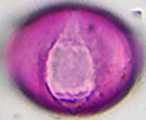
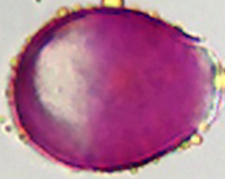
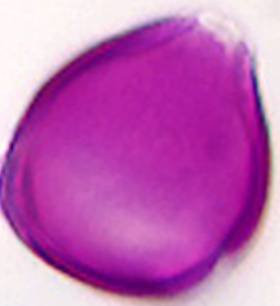
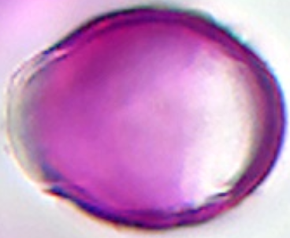

Previous HTML was wrong: prunus_pirus_typ had empty size → default 50 µm = 125 px while showing an avium photo (~39 µm = 98 px).
Rule: width_px = round(largest_µm × 2.5), taken from the image folder taxon, not the label slug.

prunus_pirus_typ
prunus_avium
prunus_laurocerasus
malus_typ